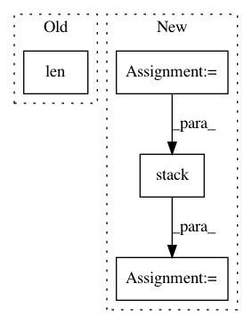

98e43878ec0e56f4bacd2960169a483af8f44c31,app/ops.py,,pit_mse_loss,#Any#Any#Any#Any#Any#,262
Before Change
s_loss
"""
ndim = len(s_x.get_shape().as_list())
assert -ndim <= pit_axis < ndim
pit_axis %= ndim
assert pit_axis != 0
reduce_axes = [
After Change
tf.square(s_x - s_y), reduce_axes)
s_loss_sets = tf.einsum(
"bij,pij->bp", s_cross_loss, s_perms_onehot)
s_loss_sets_idx = tf.argmin(s_loss_sets, axis=1)
s_loss = tf.gather_nd(
s_loss_sets,
tf.stack([
tf.range(hparams.BATCH_SIZE, dtype=tf.int64),
s_loss_sets_idx], axis=1))
s_loss = tf.reduce_mean(s_loss)
return s_loss, v_perms, s_loss_sets_idx
In pattern: SUPERPATTERN
Frequency: 3
Non-data size: 4
Instances
Project Name: khaotik/DaNet-Tensorflow
Commit Name: 98e43878ec0e56f4bacd2960169a483af8f44c31
Time: 2017-08-03
Author: junkkhaotik@gmail.com
File Name: app/ops.py
Class Name:
Method Name: pit_mse_loss
Project Name: rlworkgroup/garage
Commit Name: 563acaf48cf475f4b125fd32374c6bb566049551
Time: 2019-11-06
Author: 43084978+yonghyuc@users.noreply.github.com
File Name: src/garage/torch/algos/vpg.py
Class Name: VPG
Method Name: process_samples
Project Name: geomstats/geomstats
Commit Name: 109f18b6bce4b72299f6b9aa4cc94bab2d283190
Time: 2020-04-25
Author: nicolas.guigui@inria.fr
File Name: geomstats/geometry/beta_distributions.py
Class Name: BetaMetric
Method Name: christoffels